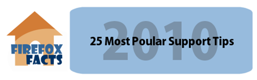

We all have questions about how Firefox works and how we can tweak it to make it better. That is the single greatest aspect of this fantastic browser. So, with the end of the year coming up quick I thought it was about time we took a look back at the 25 most popular browser tweaking tips, customizations and tutorials I have posted on Firefox Facts over the years. These 25 posts you see are the most visited topics from all of the support related articles I have written.
You voted for these with your mouse clicks over the past year, so let us check out the most popular Firefox support posts of 2010.
Change Default Search in Firefox
Tired of having Google as the default search engine in Firefox? Maybe it is another search engine’s turn to be on top?! If you feel the urge to dethrone Google as the default search engine for your Firefox search box – this is how you can get it done.
How to Backup Firefox Bookmarks
Backing up your bookmarks is one of those chores you have on your to-do list but never get around to it. Then when they are lost, you say – I wish I would have. Here are a few Firefox bookmark backup techniques to help you out.
Firefox Private Browsing Mode Help and FAQ
Want to increase your privacy on your PC? With the release of Firefox 3.5, our favorite browser now has a Private Browsing mode. Usually your browser remembers the web sites you have visited, your user names and passwords, your browsing history and more. However, with this newest addition to the Firefox 3.5 feature list, you can now go incognito on the Internet.
about:robots – Firefox 3 Secret!
For those of you playing with Firefox 3 – Beta 5, try typing about:robots into your address bar and hit enter.
Firefox 3.6 Fix – Open New Tabs in Far Right
New to Firefox 3.6, when you are on a page, and you want to open a link in a new tab – rather than opening the link in the far right of the tab bar, Firefox will now open the link right next to the tab you are in. Now, while this might be convenient for some, it is a feature I don’t really need. So here is how you can disable the new “Insert Related Tab After Current” tweak in Firefox 3.6.


Useful collection of Firefox related tips. Thanks!
(You can edit the post’s header image – missing “p” in “Popular”. ;) )